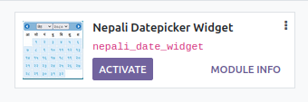
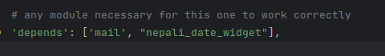
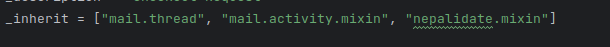
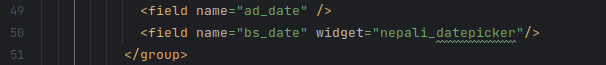
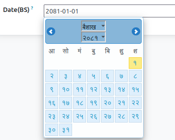

Steps to Install the module and populate english and nepali date fields with computation logic. Alternatively, you can use the final step to just add the widget
Activate the nepali_date_widget module 
Add this module as a depends on the module you are trying to use it 
On the model you are trying to implement english and nepali date and its conversion inherit the abstract model "nepalidate.mixin" 
In the view for the bs_date field(automatically added by the mixin) add the widget "nepali_datepicker" 
Alternatively you can just add the widget to any field that you want to populate with nepali datepicker

Special Thanks to Sajan Maharjan for his jquery nepali datetime picker